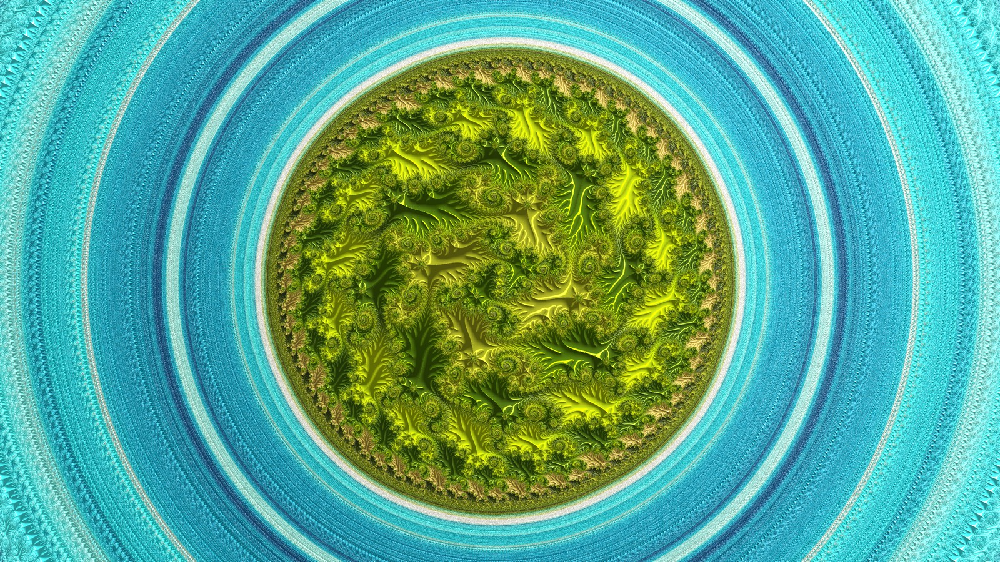
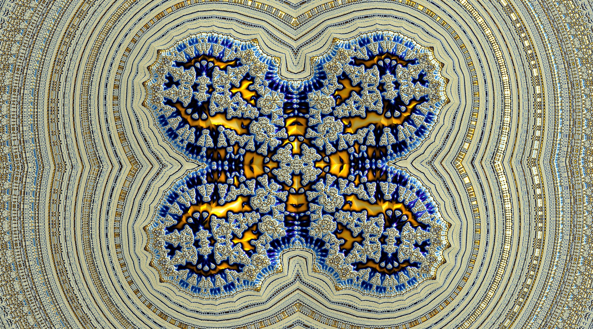

Overview
Fractalshades is a library for creating static and interactive visualizations of fractals in Python. It targets primarily the Mandelbrot and Burning_Ship sets, for which it allows arbitrary precision exploration (1.e-2000 scale and beyond).
Rendering speed is optimised thanks to state-of-the-art algorithm (based on perturbation technique and chained bilinear approximations).

A quite deep Mandelbrot zoom, width 2.e-2608 (credit: see 11- Ultra-deep embedded Julia set)

Another very deep zoom, this time in the Burning Ship fractal, width 1.14e-2430 (see 15 - Burning Ship ultra-deep embedded Julia set)
Perturbation technique allows to render an image whith only one point calculated at arbitrary precision (the reference orbit). The other points are iterated as delta with a standard double precision (for very deep zooms, an extra integer is used to hold the exponent).
When the delta are small and the reference orbit stays sufficiently far from critical points or singularities, the iterated function can be approximated by its tangent without loss of precision, and such approximations can be chained allowing to skip many iterations. This allows another speedup of several orders of magnitude.
Implementation-wise, the core-loops run in parallel on the CPU and they use just-in-time compiling through numba. Arbitrary precision calculations rely on a dedicated MPFR C-extension compiled with Cython (Windows & Linux OS).
For interactive exploration, a GUI is implemented under PyQt6.
The main drivers for this hobby project have been the mathematical interest and the aesthetics, hence the post-processing which reveal the structure of the mathematical objects have been priviledged.